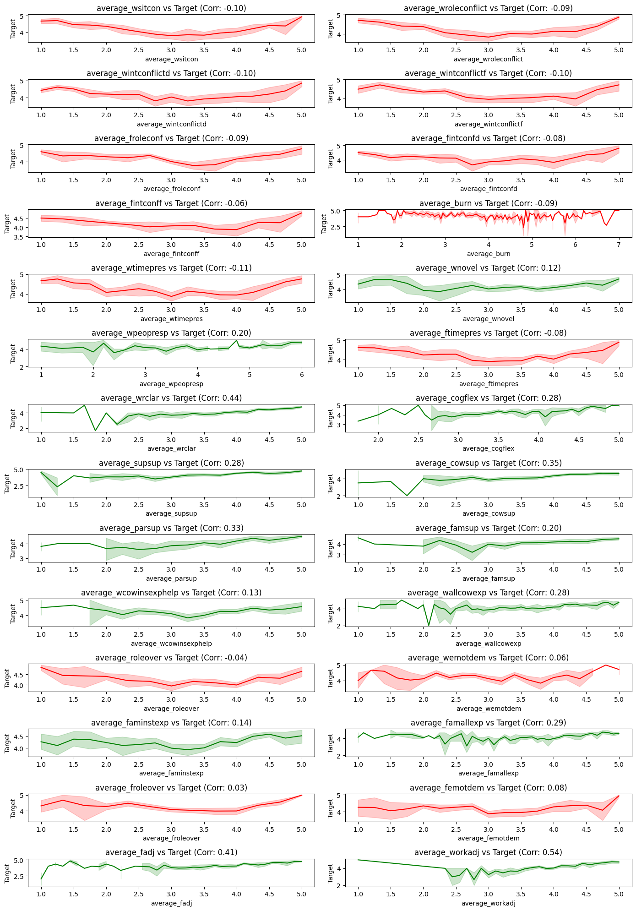

Project Overview
This project investigates the influence of work and family dynamics on job satisfaction for international business travelers. Combining structural equation modeling theory with machine learning techniques, it aims to predict work role adjustment, family role adjustment, and overall job satisfaction.
- Analyzed survey data collected from international business travelers across multiple industries.
- Developed predictive models to assess work and family role adjustments and their impact on job satisfaction.
- Extended existing theoretical frameworks by integrating machine learning methods.
- Uncovered unexpected patterns, such as time pressure acting as a hindrance stressor.
Technologies Used
- Python
- Random Forest Regression
- XGBoost Modeling
- Cross-Validation Techniques
- Feature Importance Analysis
Project Highlights
- Built models to predict work role adjustment, family role adjustment, and job satisfaction with high accuracy (low MSE scores).
- Extended the base models by incorporating additional work-family conflict and support variables.
- Discovered that work/family time pressures negatively impact job satisfaction, contrary to traditional assumptions.
- Validated theoretical assumptions using real-world ML predictive performance.
Future Scope
Future plans include implementing longitudinal models to study evolving work-family dynamics over time and integrating psychological and environmental variables to enhance predictive accuracy further.